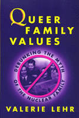

<body bgcolor="#FFFFFF" text="#000000" link="#0000FF" vlink="#CC0000" alink="#CC0000"><center><hr width="350" size="1" align="center" noshade>The flaw in the fight for gay and lesbian marriage<hr width="350" size="1" align="center" noshade><p><a href="https://cdcshoppingcart.uchicago.edu/Cart/ChicagoBook.aspx?ISBN=9781566396837&&PRESS=temple" target="_top">Buy this book!</a> | <a href="https://cdcshoppingcart.uchicago.edu/Cart/Cart.aspx?PRESS=temple" target="_top">View Cart</a> | <a href="https://cdcshoppingcart.uchicago.edu/Cart/Cart.aspx?PRESS=temple" target="_top">Check Out</a></p><p></p></center><!--none//--><h1>Queer Family Values</h1>
<H2>Debunking the Myth of the Nuclear Family</H2>
<h3>Valerie Lehr</h3>
<P>cloth 1-56639-683-2 $74.50, May 99, <FONT COLOR=#990033>Out of Stock Unavailable</FONT>
<br>paper 1-56639-684-0 $29.95, May 99, <FONT COLOR=#990033>Available</FONT>
<BR> 224 pp
6x9
</P><BLOCKQUOTE><I>"Lehr's discussion of the political stakes in sexual immutability is invaluable.... Lehr challenges virtually every comfortable element in contemporary lesbian and gay politics. Along with immutability and the desirability of marriage, she challenges readers to come to terms with polygamy, racial differences in understandings of sexuality, and violence within marriage."</i>
<br>&#151<b><i>American Political Science Review</i></b><i></I></BLOCKQUOTE>
<P>The flaw in the fight for gay and lesbian marriage rights, argues Lehr in <I>Queer Family Values</I>, lies in its failure to call into question the forms of oppression&#151gender, racial, and economic&#151that lead society to privilege the nuclear family. Lehr calls for activists to counter conservative discourses that see the nuclear family&#151what Lehr considers a socially defined institution that works to maintain, in various ways, inequalities among people&#151as the only responsible and mature family alternative. She asks for an approach to family issues and individual liberty that challenges power rather than demands access to privilege. She advocates social policies that enhance the freedom of all people, not simply those gay and lesbian adults seeking to be part of the dominant vision of family in our society. </P>
<P>Analyzing recent works on family, gender, race, and class, Lehr shapes a theory of rights, freedom, and democracy that can liberate us from the strictures of conservative hegemony. She also provides practical examples of how activists can work for a more compassionate and caring society. She devotes a chapter, for example, to the responsibilities activists have to lesbian and gay youths, who&#151unlike other children, who might find refuge from social injustice at home&#151most often find in the traditional American home homophobia and isolation. Asserting that family care should be seen as a community function, <I>Queer Family Values</I> offers an alternative political strategy focused not on gaining rights, but on enhancing democracy and equality in private life. </P>
<BR>&nbsp;<h2>Excerpt</h2><P>Excerpt available at <a href="http://www.temple.edu/tempress">www.temple.edu/tempress</a></p>
<BR>&nbsp;<h2>Reviews</h2>
<p><i>"Throughout, Lehr cogently argues that the 'traditional' concepts of marriage, family, gender roles and sexuality that conservatives are trying to defend are unstable and often detrimental to those involved. In response, she postulates a new 'radical democratic politics' that would 'not bring the state into people's lives, but use state power to enable citizens to have the resources that they need to make real choices.' ...While much of the book is an explication of political and social theory, Lehr's prescriptions for implementing her ideas are often concrete and practical."</i>
<br>&#151<b><i>Publishers Weekly</i></b>
<p><i>"Lehr offers a double critique. This study is both critical to the main social family values as to the mainstream gay movement. ...this book makes us think about our own presuppositions. Therefore, Lehr has succeeded in realizing her intention."</i>
<br>&#151<b><i>Archives of Sexual Behavior</i></b>
<BR>&nbsp;<h2>Contents</h2><P>
<P>Acknowledgments
<br>Introduction
<br>1. Rights, Freedom, and the Limits of Inconclusion
<br>2. Are We Family?
<br>3. Radical Democracy and Queer Identity
<br>4. Social Problems and Family Ideology
<br>5. Who Are "Our" Children?
<br>6. Creating the Conditions for Freedom in Private Life
<br>Notes
<br>References
<br>Index
</P><BR>&nbsp;<H2>About the Author(s)</H2>
<P><B>Valerie Lehr</B> is Associate Professor of Government and Coordinator of Gender Studies at St. Lawrence University.</P>
<BR><H2>Subject Categories</H2>
<p><A HREF="/tempress/sexual.html" TARGET="_top">Sexuality Studies/Sexual Identity</a>
<BR><A HREF="/tempress/political.html" TARGET="_top">Political Science and Public Policy</a>
<BR><A HREF="/tempress/women.html" TARGET="_top">Women's Studies</a>
</p>
<BR><h2 class="inpageheading">In the series</H2>
<P><I><a href="http://www.temple.edu/tempress/queer.html" onMouseOver="window.status='Click for other books in this series!'; return true;" onMouseOut="window.status=''; return true;" target="_top">Queer Politics, Queer Theories</a></i>, edited by Craig Rimmerman.
</p><p>The last ten years have seen the growth of rich research in the politics of sexuality. <i>Queer Politics, Queer Theories</i>, edited by Craig Rimmerman, aims at developing this research both within and across disciplines. The series will focus on politics in the broadest sense: not only state- and government-oriented studies, but also community politics and the internal politics of new social movements. Such work may originate in political science, sociology, economics, American studies, philosophy, law, history, or anthropology. The series will be defined not by particular academic disciplines but by the questions raised in it. The keys are a concern for the play of power and meaning in discussions of sexuality, and/or a reading of the role of sexuality and sexual identities in conceptions of social and political studies or in our common life.</p>
<p align="center"><a href="https://cdcshoppingcart.uchicago.edu/Cart/ChicagoBook.aspx?ISBN=9781566396837&&PRESS=temple" target="_top">Buy this book!</a> | <a href="https://cdcshoppingcart.uchicago.edu/Cart/Cart.aspx?PRESS=temple" target="_top">View Cart</a> | <a href="https://cdcshoppingcart.uchicago.edu/Cart/Cart.aspx?PRESS=temple" target="_top">Check Out</a></p><p><font face="Arial" size="1"><a href="copyright.html" onMouseOver="window.status='Web Copyright Policy';return true;" onMouseOut="window.status=''" title="Web Copyright Policy">&copy;</a> 2015 <a href="http://www.temple.edu" target="new" onMouseOver="window.status='Link to Temple University home page';return true;" onMouseOut="window.status=''" title="Link to Temple University home page">Temple University</a>. All Rights Reserved. http://www.temple.edu/tempress/titles/1354_reg.html</font></p>